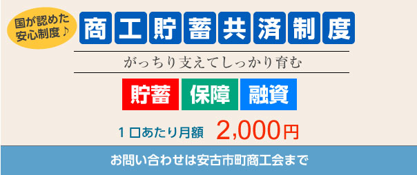
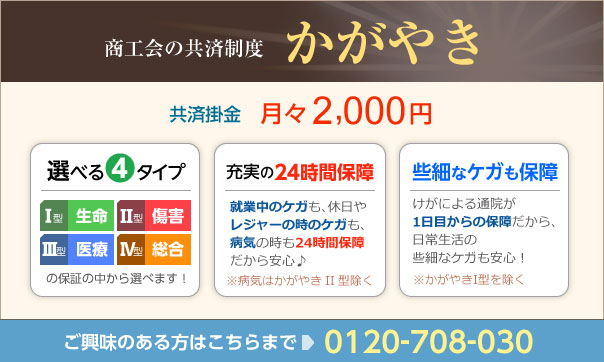
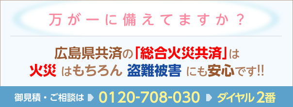

商工会は地域事業者が会員となり、ビジネスやまちづくりのために活動を行う総合経済団体です。「商工会法」に基づいて設立され、全国の市町村に1,671（平成26年9月現在）の商工会があり、約85万の事業者が加入しています。全国的なネットワークと高い組織率（地域事業者の約60％が加入）を有し、国や都道府県の小規模企業支援施策（経営改善普及事業）の実施機関としても、さまざまな事業を実施しています。さらに各都道府県には、商工会連合会があり、広域的に地域事業者のみなさまを支援いたします。
商工貯蓄共済
商工貯蓄共済は商工会が中小企業庁から認められた正規事業です。商工会のために作られた、商工会員のための制度です。
- 加入者：商工会会員とその家族、従業員
- 被共済者：保険年齢6歳以上65歳以下の方 ※告知が必要です。
- 共済掛金：1口2,000円
- 加入期間：10年満期
広島県だけの特典
- 健康診断等助成金→健康診断等の健診費用を口数に応じて、最大15,000円まで助成します。
- 前納報奨金支給→掛金を年払いの場合は年掛金の3％を報奨金としてお支払します。
- 個別訪問相談制度→専門のライフプラン・アドバイザーが訪問し、保険の疑問に答えます。

全国商工会福祉共済
大切な、商工会会員の皆様だからこそ、加入できる特別な制度です。
ご加入できる方：商工会の会員とその家族、会員の従業員とその家族であって健康な方が対象となります。（健康状態に関する告知義務があります。）
けがの補償、がんの補償など幅広い内容がございますので、詳しくはホームページをご覧ください。
全国商工会経営者休業補償制度
全国商工会経営者休業補償制度（所得補償保険）は、病気やけがで働けない間、月々の所得を補償する制度です。
安心して、治療に専念して頂くために、入院はもちろん、自宅療養もカバーしています。
お電話にて、各医療に関する相談に応じるメディカルアシスト制度もあり。
詳しくはホームページをご覧ください。
商工会の業務災害保険制度
最近、ケガやメンタルに対する労災の賠償責任が高額になっています。
商工会の業務災害保険は、高額な賠償責任もしっかり補償！派遣社員や、構内下請け作業者も補償の対象になっております。通勤途上を含む業務上の事故による役員・従業員等のケガを補償します！
ご興味のある方は商工会まで！
- 東京海上日動火災保険㈱
- ㈱損害保険ジャパン
小規模企業共済制度
小規模企業共済制度は、小規模企業の個人事業主（共同経営者を含む）または会社等の役員の方が事業をやめられたり、退職されたりした場合に、生活の安定や事業の再建を図るための資金をあらかじめ準備しておく、いわば「経営者の退職金制度」といえる共済制度です。
掛け金は月額1,000円から70,000円の範囲内（500円単位）で自由に選べます。
しかも、掛け金は全額が「小規模企業共済掛金等控除」として、課税対象所得から控除できます。
詳しくはホームページをご覧ください。
中小企業退職金共済制度
中小企業退職金共済は半世紀で100満車以上の中小企業が活用してきた、国の退職金制度です。
パンフレット
http://chutaikyo.taisyokukin.go.jp/download/pdf/aramasi.pdf
経営セーフティ共済
経営セーフティ共済（中小企業倒産防止共済制度）は、取引先事業者が倒産し、売掛金債権等が回収困難になった場合に、貸し付けが受けられる共済制度です。「もしも」のときの資金調達手段として当面の資金繰りをバックアップします。
かがやき
かがやきは地元広島で生まれた商工会の共済制度です。地域で頑張る皆さまがイキイキと輝けるよう、時代の変化に応じた最良のサポートをいたします！

火災共済
総合火災共済が様々な損害から、あなたの大切な事業所をお守りします。お見積りだけでもかまいません！お気軽にご連絡ください！！
